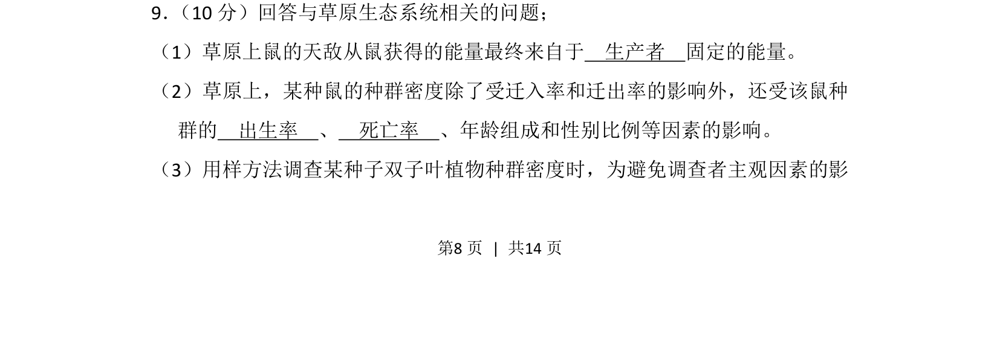
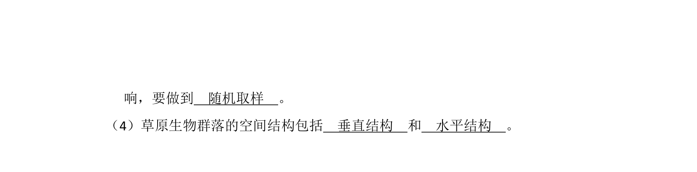
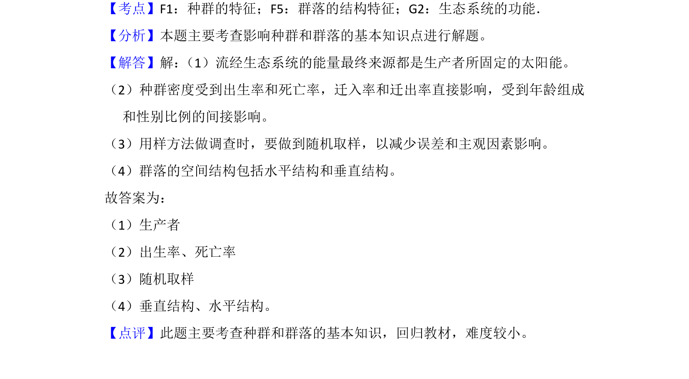

考点：生态系统能量流动 种群数量特征 样方法


该题考查草原生态系统能量来源、种群数量特征及样方法调查植物种群密度。

📄 原 PDF 第 8 页：
素材/真题/吉林/2008-2024·（吉林）生物高考真题/2013年高考生物试卷（新课标Ⅱ）（解析卷）.pdf
9． （10分）回答与草原生态系统相关的问题； （1）草原上鼠的天敌从鼠获得的能量最终来自于 生产者 固定的能量。 （2）草原上，某种鼠的种群密度除了受迁入率和迁出率的影响外，还受该鼠种 群的 出生率 、 死亡率 、年龄组成和性别比例等因素的影响。 （3）用样方法调查某种子双子叶植物种群密度时，为避免调查者主观因素的影